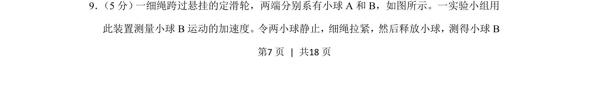
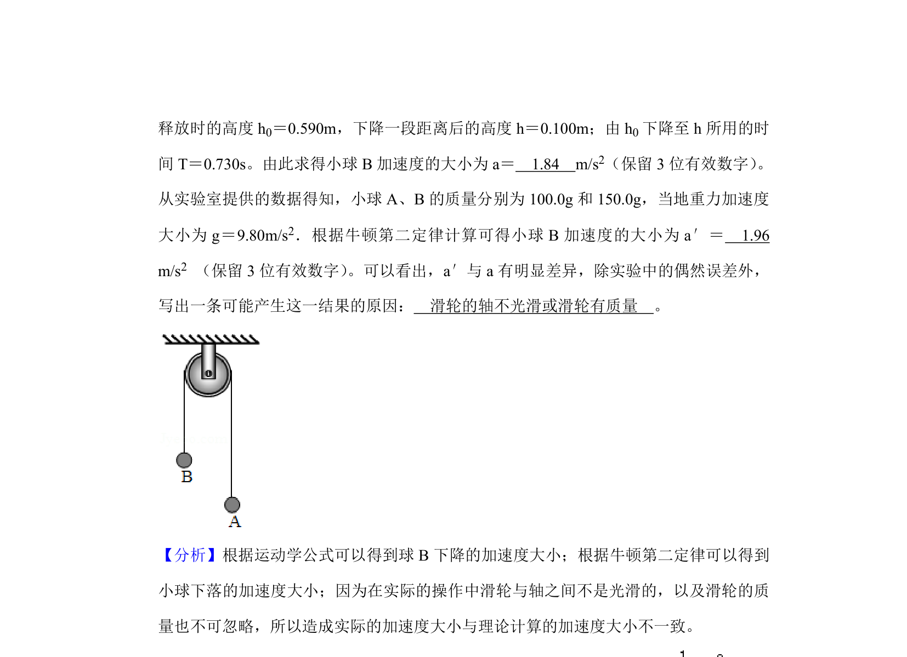
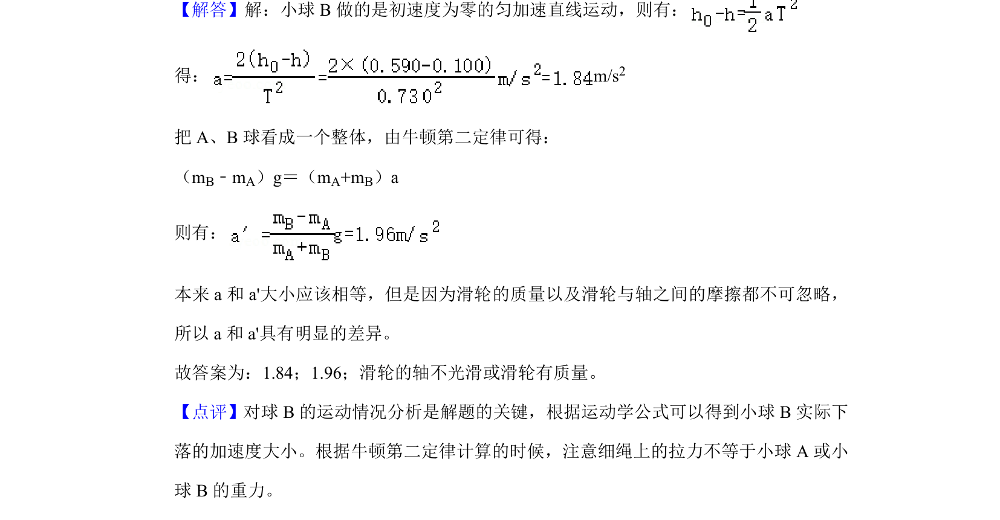

2020-新课标Ⅱ-09
吉林2020卷新课标Ⅱ不分题9题型选择难易
考点：运动学 实验测量 力学模型
题面


摘要
测量小球B运动的加速度的实验题，涉及细绳悬挂释放小球模型
关联考点
答案与解析

📄 原 PDF 第 7 页：素材/真题/吉林/2008-2024·（吉林）物理高考真题/2020年高考物理试卷（新课标Ⅱ）（解析卷）.pdf
题干文本
9． （5分） 一细绳跨过悬挂的定滑轮，两端分别系有小球A和B，如图所示。一实验小组用
此装置测量小球B运动的加速度。令两小球静止，细绳拉紧，然后释放小球，测得小球B
解析文本